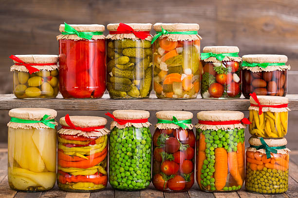

<div class="container mt-20 pb-100">
  <div class="search">
    <input
      class="mb-50 buttonEffet"
      type="text"
      placeholder="Rechercher"
      aria-label="Search"
      [(ngModel)]="search"
    />
    <button class="ml-10 buttonEffet" type="button">Search</button>
    <button class="droite buttonEffet" type="button">Froid</button>
    <button class="buttonEffet" type="button">Chaud</button>
    <button class="buttonEffet" type="button">Autres</button>
  </div>
  <!--
  <div>
    <ul *ngIf="search">
      <li *ngFor="let article of articles | filter: search">
        {{ article.title }}
      </li>
    </ul>
  </div>
-->
  <div>
    <div class="contourCarddes mb-20">
      <h2 class="titre centerTexte">
        La conservation des aliments. Pourquoi ?
      </h2>
      Parmi les solutions anti-gaspillage alimentaire, la première se trouve
      dans l’organisation des courses. Pour éviter de gaspiller, il y a quelques
      tips simples à adopter que vous pourrez appliquer dès demain.
      <br />
    </div>
  </div>
  <div class="column">
    <div class="flex flex-direction: row row pb-50">
      <div class="contourCard">
        <div>
          
          
          
        </div>
      </div>
    </div>
  </div>
  <!--
  <div class="col-sm-4">
    <app-card></app-card>
  </div>
</div>
-->
  <div>
    <div *ngIf="search">
      <div *ngFor="let article of articles | filter: search">
        <div class="col-sm-4">
          <app-card></app-card>
        </div>
      </div>
    </div>
  </div>
</div>
